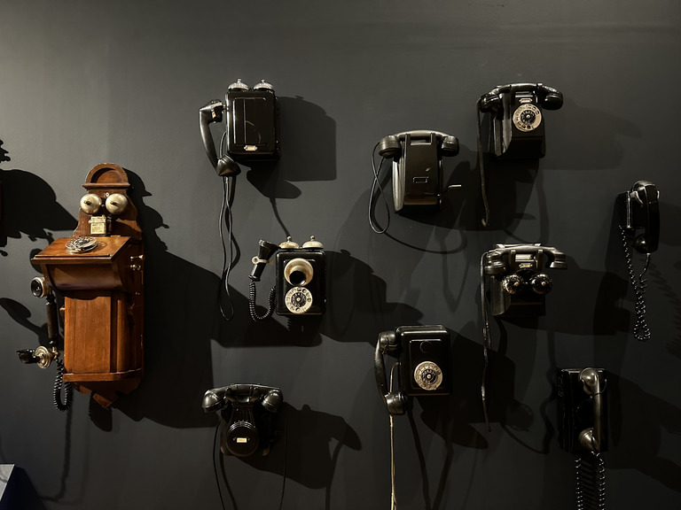
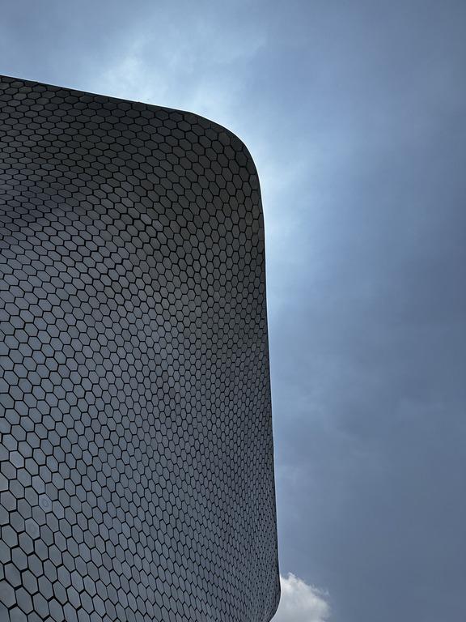

30-07-2026
By Sofia Maldonado

July has (mostly) been a month of rest and relaxation for me, possibly one of the last I will have in years
As I said last month, my most anticipated event of July was Christopher Nolan's new film, his adaptation of Homer's Odyssey. I will admit to never having read The Iliad or The Odyssey, but I am aware of some of the main plot points of both. So I didn't really see the movie as an adaptation of the original poem. I simply got to see it as a movie, an epic in every sense of the word. And it was a phenomenal movie. Epic, if you will.
Christopher Nolan is one of our great living artists, across all mediums. I felt obligated, even while watching, to compare it a lot to Oppenheimer, his previous film and one of my favorite movies of all time. I don't think it reaches those heights but I really enjoyed it still. My favorite technical aspect of the film was the sound design, and Nolan's classic editing style of showing the same scene various times in the same movie, each time evoking a different feeling. The cast was great, my favorite performances were Anne Hathaway's Penelope, Samantha Morton as Circe, Elliot Page's Sinon and, of course, Matt Damon's Odysseus and Benny Safdie's aura-farming Agamemnon.
Talking to friends who've both read The Odyssey and saw the movie, they all agreed in that this wasn't the best "adaptation" possible. This is a totally fair point, and if I were more intimately connected with the poem I would probably also be offended by some of the decisions of Nolan (like cutting the hilarious part where Odysseus calls himself "nobody"). At the end of the day, cinema is an inherently flawed medium for adapting literature, especially the long and complex Homeric epics. I believe movie adaptations work best when they try to be a different approach to the source material, since I could just read the source material if I really wanted to. Nolan made the movie he wanted to make, and I am thankful for it. And I feel like the Odyssey itself is such a foundational block of what we now call "Western literature" that it is most apt to be adapted in a million different ways.
And of course, as always, Ludwig Göransson hit it out of the park with the soundtrack. I hope he wins again at next year's Oscars.
This month I read an article that had been burning a hole in my reading backlog since June: The New Yorker's 2015 profile of Jony Ive, then Chief Design Officer at Apple, called The Shape Of Things To Come. I ended up reading the piece just a few days after Apple sued OpenAI for allegedly stealing trade secrets with recent hires.
I mention this because Jony Ive's LoveFrom is intimately connected with OpenAI, and even though the lawsuit is very careful in not mentioning him directly, it is interesting that (arguably) the greatest industrial designer of the century is caught up under the umbrella of a company that has done so much alleged design theft (and theft in general of course, as all AI companies have done). The kind of thing that someone like Ive should loathe and not want to associate with. The kind of thing that would not be necessary with someone like Jony Ive in the team.
He really has fallen as a designer, is the point I am trying to make. The Ferrari Luce proved that. It felt very jarring reading this 2015 piece, over a decade old now, back when he was on top of the world. The piece centers on the lead up to, and release, of the first Apple Watch, a product category that has become one of Apple's best in my opinion. I love my Apple Watch, and Ive was instrumental in setting the template that all later watches have followed (as in, he is one of the few designers with a big enough brain to know that ROUND shapes in smartwatches are a horrendous idea). This Ive is what I would expect of a designer like him: he almost operates in a completely different planet than the rest of us, and even the rest of most of Apple itself. This isolation of the rest of the company was instrumental for his success, even if some cases of "unrestrained Ive" as Quinn Nelson put it, were slightly too overdone. At least he set the template and left before things got even more fucky. But they will definitely get more fucky now.
Speaking of Apple, my main read this month has been Patrick McGee's Apple In China, which he released last year. His main thesis is that China didn't make Apple rise, but the opposite; that China wouldn't be the technological power and "threat" to the West that it is today without Cupertino. And I totally agree. If you think I am crazy for saying this, I really recommend you read the book.
I liked the focus and profiling of some of the lesser-known-but-instrumental figures of Apple's Chinese operations, mainly John Ford and Doug Guthrie. I was fascinated by his portrayal of pre-CEO Tim Cook as a ruthless operations manager (which he was) since my image of him has always been that he's one of the most boring guys in the world (non-derogatory).
Finally, I liked that an entire section of the book is dedicated to talking about Apple in China, as in, the impact of Apple products in Chinese society. I was not aware of how feverishly popular the first iPhones and iPads were in the country. In short, I recommend this book a lot, even if the first section feels slightly out of place with the rest, since it's mostly Apple history and almost all pre-Jobs's return to Apple.
The Strokes's Reality Awaits finally came out last week!! I have listened and re-listened to it a lot since last Saturday, and I am starting to see the vision. The auto-tune definitely feels overdone and ruins some songs in the album (Going to Babble On makes me sad), but, in the context of the entire album, I am actually super OK with many of the production decisions. I guess this is my sign to never question what Rick Rubin can do as a curator.
My favorite songs were Psycho Shit, a phenomenal opener, as well as Dine N'Dash, Lonely in the Future, Falling Out Of Love (if you can believe it), Liar's Remorse and The Fruits of Conquest. Unfortunately Tyrants of the Mellow Moon was never going to be as incredible of a closer as Ode To The Mets, but it is difficult to surpass literal perfection.
I went to Mexico City this month. During my trip I got to visit the Museo Soumaya, arguably the country's most important private museum, which I had never visited despite living so close for years. I was mostly drawn to all of the beautiful European and 20th-century Mexican art pieces on display. There were also a lot of classical, renaissance and neo-classical sculptures, but they were all replicas so they are inherently uninteresting to me. Still, I would recommend it as a pit stop for anyone visiting Mexico City, provided you have visited the city's phenomenal public museums already.

The Soumaya is also crazy from the outside
One last "general" thing I want to mention, which I only found literally yesterday, was Matcha Flavoured, a data pack for Minecraft 26.1.2 that aims to make the game less "grind-y". Finding this has been one of the biggest revelations I've had in years related to Minecraft, a game that I have sunk tens of thousands of hours into over the last 15 years. I have strayed from survival Minecraft for years because of how uninspiring the game has felt to me over time. Even with mod packs I could never find that original spark that so many hundreds of millions of people have felt with the game. The last time I truly had real fun playing vanilla survival Minecraft was back in 2020 when I played in an SMP with some friends.
Matcha Flavoured changes so many things about the Minecraft formula that it genuinely feels like a brand new game. I won't spoil anything here, but if you feel like you haven't enjoyed the game in years like me, I cannot recommend this data pack enough. It is revolutionary.
Besides Reality Awaits, I also listened to two other albums in July: Inbred by Ethel Cain and Sound of Silver by LCD Soundsystem.
Hayden is one of the greatest songwriters alive, and her storytelling is almost unmatched in the medium. The greatest expression of her capabilities is her 2022 album Preacher's Daughter, one of my 10 favorite albums of all time. Inbred (great name btw) has those great storytelling chops in a lesser quantity and scope. I enjoyed it as a bite-sized piece of very interesting music.
I was interested in listening to LCD Soundsystem ever since I read Meet Me In The Bathroom. Sound of Silver is a decent album with a lot of interesting production, and New York, I Love You But You're Bringing Me Down was the best song I listened to this month.
Some of my favorite articles I read this month include:
- On The Chud Vision Of Roman History, which spoke to me as someone with a lot of interest in Ancient Roman history that isn't a bigot, a rare breed these days.
- Be Excellent, Not Efficient. The islamic concept of ihsan, or sacred excellence, really stuck with me. We really owe it to ourselves to do the best work we possibly can.
- LCD Soundsystem Is Even Older, a profile more focused on James Murphy than the rest of the band, but still an interesting read.
- Can Partiful keep the party going?, a very odd read for someone outside of the United States. It's dizzying how many successful US apps are completely invalidated in most other parts of the world by the existance of WhatsApp.
- Advice Is Cheap, left blank on purpose.
- Method Beats Madness at the World Cup Final, a great resume of Spain's World Cup victory over Spain.
- Mornings in Cupertino Have the Aroma of Napalm Once Again by John Gruber. His connection of Apple's latest OpenAI lawsuit with other lawsuits in their past was amazing. Gruber does this very incredibly well, aided by his own two-decade long archive of reporting on the company.
- How I Wrote a Book. I have never written something as long as a book but this was still very interesting for some long-form writing projects I've been thinking about. Stay tuned!
- The New York Of The Past Is Still Visible Today. You Just Have To Look. These are my favorite articles in The New York Times. Very niche and highlighting interesting bits of New York City's past. Love it.
- it feels the way I hoped it would feel. This is, again, about the Knicks winning the NBA Finals last month. It got lost in my bookmarks and I only found it just this morning that I'm publishing this. How can you not be romantic about sports?
August is going to be a way busier month than July. I am going back to school for my final third of education before I graduate, which is both exciting and horrifying. I will also try to get more programming done, and maybe even an internship to get that sweet-sweet work experience.
Phoebe Bridgers's new album Lost Weekend is also coming out next month, her first in over half a decade!! This is actually my most anticipated album of the year. I haven't even listened to the single she put out because I want to experience all of the album, for the first time, all at once.
Axolotl imagery runs Mexico City, I love it